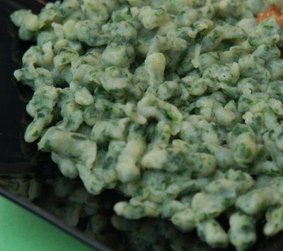

| Zutaten für 4 Personen: | |
| 150 g | frischer Winterspinat |
| 250 g | Mehl |
| 1 Tl | Salz |
| 3 | Eier |
| 1 dl | Milch |
| 2 l | Salzwasser |
| Reibkäse | |
| Margarine oder Butter | |
Spinat waschen. Ohne abtropfen in einer Pfanne zugedeckt ca. 5 Minuten dämpfen.
Gut ausdrücken und mit dem Wiegemesser sehr fein hacken.
Mehl und Salz mischen.
Die Eier mit der Milch verklopfen und die ganze Flüssigkeit aufs Mal zugiessen.
Den Spinat darunter rühren und den Teig kräftig klopfen, bis er Blasen wirft, glatt und glänzig ist.
½ Stunde ruhen lassen. (Ja, wirklich - da passiert was.)
Wasser aufkochen. Den Teig portionenweise durchs Passevite mit grösstem Locheinsatz oder mit Hilfe des Spätzlers ins knapp siedende Wasser geben.
Spätzli so lange ziehen lassen, bis sie an der Wasseroberfläche schwimmen. Mit der Lochkelle herausnehmen und in eine vorgewärmte Schüssel geben.
Eventuell mit Reibkäse und Margarine oder Butter servieren.
Betty Bossi Zeitung, Nr. 2 Feb 1991, Seite 10
War zusammen mit dem Kalbsvoressen mit Steinpilzen als Rezept vorgeschlagen
Gibt viel Arbeit in der Zubereitung und ist fraglich ob das Resultat gegenüber dem Industrieprodukt vom Supermarkt besser ist. Kommt wohl auf die Übung des Kochs an und die Hilfsmittel die zur Verfügung stehen. Ich habe meine Spätzli mit dem Teigschaber durch die Röstiraffel gedrückt und das Resultat war, wie beabsichtigt, Knöpfli. Habe aber den Spinat nicht wirklich klein genug gehackt (war ja kalt vom auftauen) und aus Zeitmangel wurde die Ruhezeit von 30 Minuten gestrichen. Vielleicht passiert dort noch etwas chemisch wichtiges? Das Resultat war etwas matschig. Somit nur 3 Sterne. RE 17.2.2008
Eine Leserin aus Wettingen schreibt mir am 17 Juli 2008: Bei allen Teigen, in denen Mehl 'irgendwie' binden soll, also vom Kuchenteig bis zu den Spätzli, sollte man der Stärke im Mehl die Gelegenheit geben, zu quellen. Die Stärkekörner saugen dann Flüssigkeit auf und so bindet der Teig. Gerade bei grünen Spätzli, bei denen der Teig trotz gut ausgedrücktem Spinat eher nass ist, lohnt es sich, den Teig bis eine Stunde quellen zu lassen. Der Teig reisst dann in schweren Tropfen vom Sieb. Zwei weitere Tipps: Leisten Sie sich ein richtiges Spätzlisieb, es gibt sie in jedem Warenhaus (Manor, City-Coop, etc.) für rund zwanzig Franken zu kaufen. Und falls Ihre Küche (wie die meinige auch) klein ist: Ein Spätzlisieb ist flach, nimmt somit weniger Platz in Anspruch als ein Pfannendeckel. Und der zweite Tip: Muskat und Koriander gemahlen sind die Gewürze, die aus jedem langweiligen Spinatrezept ein peppiges machen.
Im März 2012 habe ich es erneut probiert mit einem richtigen Spätzlisieb und genug Zeit zum quellen. Und siehe da: das Resultat war sehr gut! Jetzt gibt's auch den vierten Stern. Ausserdem war die Sauerei um den Herd herum deutlich weniger (ist eine verflixt klebrige Sache, der Spätzliteig). RE
@LINKBACK_TAG@ @WAKELOCK@